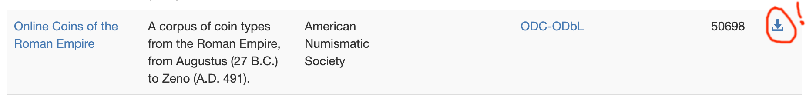
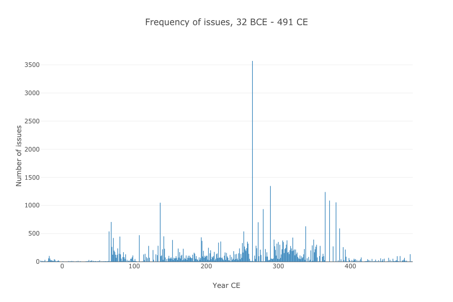
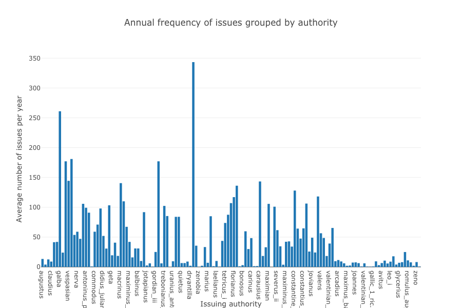
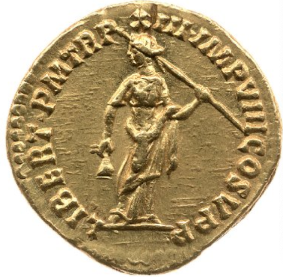
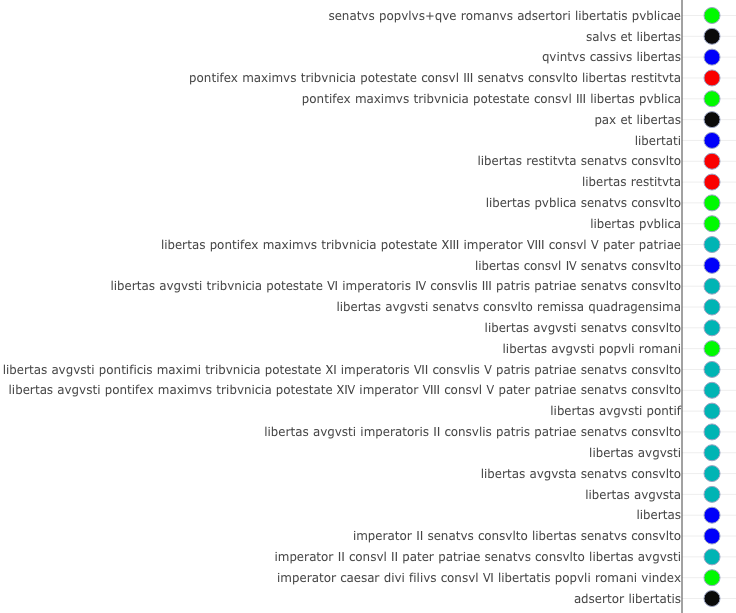
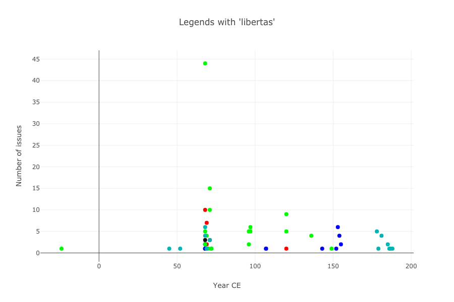

Tweeting in Roman Imperial Coinage
Thomas Martin, Thomas Posillico, Neel Smith
College of the Holy Cross
OCRE: a familiar resource on the Web

But also a downloadable dataset
Crucial features
- openly licensed
- defined data structure
- stable identifiers
Apply computational tool of your choice
- geographic information system
- statistical packages
- natural language analysis
Tweeting?
Official, sanctioned texts:
- frequent
- widely circulated
- terse

Frequent
- 97 issues per year
- ~ every 4 days for 500 years!

But varies by authority

Widespread
Tweet-like texts
- average text ~ 21 characters
- limited vocabulary
- e.g., RIC 1-3: only 424 distinct tokens!
- highly abbreviated
- e.g.
R XL= remissae quadragensimae (LOL)
- e.g.
Building a text corpus

Diplomatic transcription (from RIC)
LIBERT P M TR P XIII IMP VIII COS V P P
Expanded and normalized version
libertas pontifex maximvs tribvnicia potestate XIII imperator VIII consvl V pater patriae
Standard orthography
23 alphabetic and 4 punctuation characters:
ABCDEFGHIKLMNOPQRSTVXYZ -•←|
An example: libertas
Expanded corpus resolves:
- orthographic ambiguity (
LIB=libertasor1iberalitas?) - morphological ambiguity (nom., gen., dat. all appear)
Context
- legends of more than 200 issues refer to
libertas - 29 distinct legends


Concluding observations
beyond search → exploration of multidimensional data using variety of instruments
replicable scholarship → all analyses available online
Thank you!
Slides and further links:
http://neelsmith.info/current-projects/tweeting/aha/